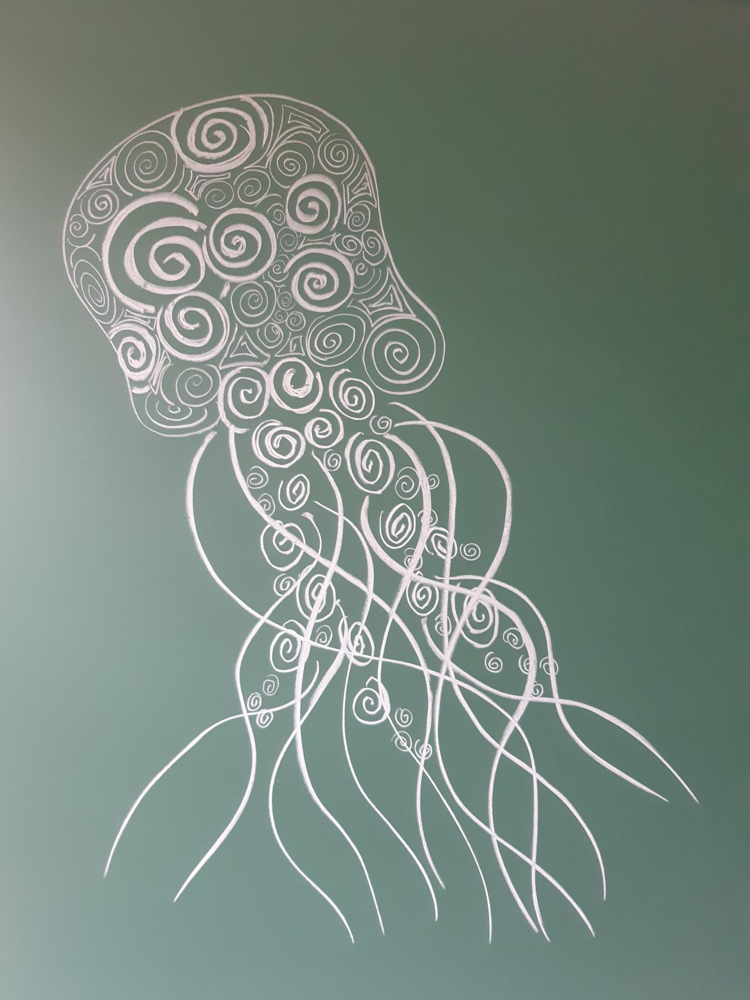

My papers (ordered by availability online)
- H-Planarity and Parametric Extensions: when Modulators Act Globally, with Fedor V. Fomin, Petr A. Golovach, and Dimitrios M. Thilikos. Conference: SODA 2026.
- Fault-Tolerant Matroid Bases, with Matthias Bentert, Fedor V. Fomin, and Petr A. Golovach. Conference: ESA 2025.
- When does FTP become FPT?, with Matthias Bentert, Fedor V. Fomin, and Petr A. Golovach. Conference: WG 2025.
- Excluding Pinched Spheres, with Evangelos Protopapas, Dimitrios M. Thilikos, and Sebastian Wiederrecht, 2025.
- Graph modification of bounded size to minor-closed classes as fast as vertex deletion, with Ignasi Sau and Dimitrios M. Thilikos. Conference: ESA 2025.
- Vertex identification to a forest, with Ignasi Sau and Dimitrios M. Thilikos. Journal: Discrete Mathematics.
- On the parameterized complexity of computing good edge-labelings, with Davi de Andrade, Júlio Araújo, Ignasi Sau, and Ana Silva. Journal: JCSS.
- A note on locating sets in twin-free graphs, with Nicolas Bousquet, Quentin Chuet, Victor Falgas-Ravry, and Amaury Jacques. Journal: Discrete Mathematics.
- PACE Solver Description: Touiouidth, with Gaétan Berthe, Yoann Coudert–Osmont, Alexander Dobler, Amadeus Reinald, and Mathis Rocton. Conference: IPEC 2023.
- Dynamic programming on bipartite tree decompositions, with Lars Jaffke, Ignasi Sau, and Dimitrios M. Thilikos. Conference: IPEC 2023. Journal: JCSS.
- Faster parameterized algorithms for modification problems to minor-closed classes, with Ignasi Sau, Giannos Stamoulis, and Dimitrios M. Thilikos. Conference: ICALP 2023. Journal: TheoretiCS.

Drawing by Sebastian Wiederrecht
Challenge
PACE Challenge 2023, with Gaétan Berthe, Yoann Coudert–Osmont, Alexander Dobler, Amadeus Reinald, and Mathis Rocton: 3rd place in the Exact Track.
Co-authors
Davi de Andrade,
Júlio Araújo,
Matthias Bentert,
Gaétan Berthe,
Nicolas Bousquet,
Quentin Chuet,
Yoann Coudert–Osmont,
Alexander Dobler,
Victor Falgas-Ravry,
Fedor V. Fomin,
Petr A. Golovach,
Amaury Jacques,
Lars Jaffke,
Evangelos Protopapas,
Amadeus Reinald,
Mathis Rocton,
Ignasi Sau,
Ana Silva,
Giannos Stamoulis,
Dimitrios M. Thilikos,
Sebastian Wiederrecht.